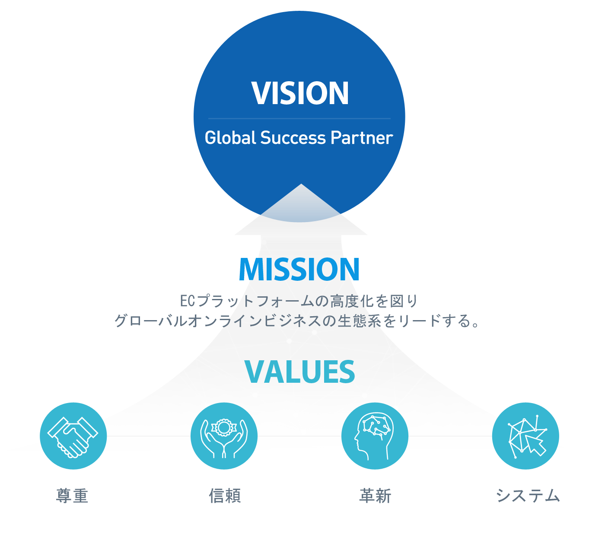

会社紹介
グローバルEC市場をリードするサクセスパートナーです。
- HOME
- 会社紹介
- ビジョン
ビジョン


- 信頼経営緊密なコミュニケーションを通じて信頼を形成する。
- 人本主義の経営組織の成果は、人によって決められる。
- 顧客中心の経営顧客のニーズを素早く、正確に把握し顧客感動に繋げる。

- ブランドパワー最高の技術力を提供するブランドとしてイメージ構築
- 新技術の開発・投資業界をリードする新技術の開発に積極投資
- 事業領域の拡張インターネットを中心として多様な事業を研究